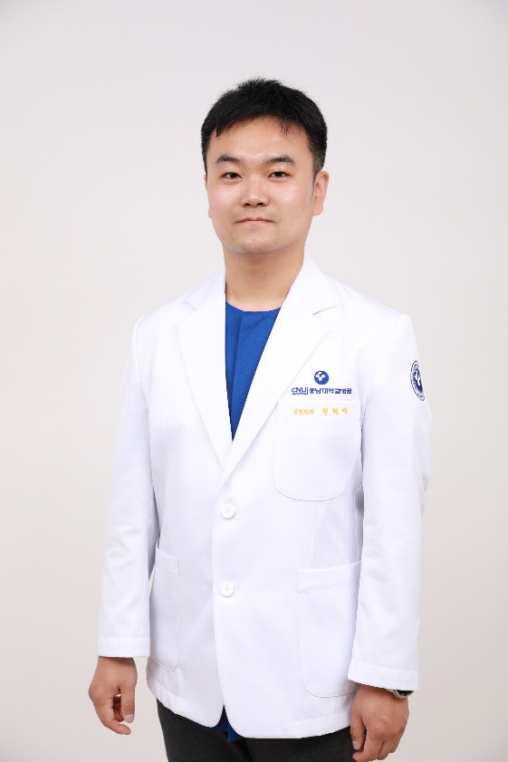

Dr. Hyeokjae Kwon combines a unique interdisciplinary background in Computer Science (B.S., KAIST) and Medicine (M.D., Ph.D., Chungnam National University). His research integrates artificial intelligence, medical computer vision, and virtual reality preoperative education into plastic and reconstructive surgery, with dedicated research interests in chronic wounds and surgical site infections (SSI).
An experimental solar-aware smart navigation system comparing Fastest, Glare-Avoidance (CIE Stiles–Holladay), and Shade-Priority routes. Features MapLibre GL vector rendering with 3D heading-up orientation, precalculated 2.5D building & terrain occlusion across the USA (4 regions) and South Korea (154,000+ tiles), NREL SPA solar positioning, Open-Meteo DNI forecasts, voice turn guidance, free-drive detection, and PiP mode on Android.
A 100% offline, privacy-first cinematic travel story reconstructor & video creation studio for Android. Transforms Google Timeline JSON and photo/video timestamps entirely on-device into animated journey playback with transport characters (car, train, flight, boat), video clip placement with audio & BGM mixing, 1080p/720p MP4 export, and lossless full ZIP backup.
An offline 3D globe & real-world DEM terrain travel reconstructor for Android. Simulates travel journeys with OpenGL ES 2.0 globe & USGS/Mapzen elevation meshes, featuring dynamic 3D vehicle models with bounce physics, cinematic chase/free camera switching, video clip insertion with audio mixing, and hardware-accelerated 1080p/720p H.264 MP4 export.